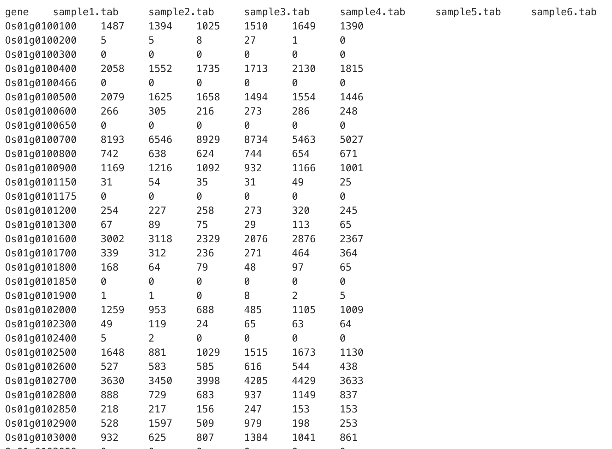

🧭 Training Overview: Linux Basics, Filesystem, and Shell Navigation
🎯 Topic
Linux Basics, Filesystem, and Shell Navigation
👥 Target Audience
Beginners in bioinformatics — no prior Linux experience required.
🏁 Goal
Help participants become comfortable using the Linux terminal and executing essential file and folder commands commonly used in bioinformatics workflows.
What is an Operating System?
An Operating System (OS) is the main software that runs your computer or phone. It controls everything — apps, files, memory, and devices like your mouse or keyboard.
🧩 What Does It Do?
- Runs Programs
Lets you open and use apps like browsers, games, or Word. - Manages Memory
Shares the computer’s memory (RAM) between programs so they don’t crash. - Stores Files
Helps you save, open, and organize files in folders. - Controls Devices
Makes the keyboard, mouse, speakers, and printer work.
Understanding Operating Systems for Bioinformatics
When working with bioinformatics tools, it's essential to understand the differences between operating systems (OS) like Windows, Linux, and macOS, as well as how to bridge the gap between them using tools like WSL (Windows Subsystem for Linux).
1. Windows vs. Linux vs. macOS
- Windows is a popular OS for general use and is often used in corporate environments. While it has GUI-based tools, it can be limiting when working with command-line-heavy bioinformatics workflows. Many bioinformatics tools are not natively supported on Windows, requiring workarounds like WSL or virtual machines.
- Linux is the preferred OS for bioinformatics because it offers superior performance, stability, and extensive command-line tools designed specifically for computational tasks and data analysis. Most bioinformatics software is optimized for Linux.
- macOS is similar to Linux in terms of underlying architecture (both are Unix-based), so many bioinformatics tools that run on Linux can also run on macOS. It's often preferred by researchers who need a balance of ease of use (macOS GUI) and command-line functionality. It offers strong support for development environments and bioinformatics software, though some specialized Linux tools might require additional setup.
2. Windows Subsystem for Linux (WSL)
- WSL allows Windows users to run a Linux environment directly on top of Windows without the need for dual-booting or using virtual machines.
- WSL provides a full Linux kernel, enabling users to install and run popular bioinformatics tools that are typically only available on Linux.
- Advantages of WSL:
- Easy access to both Windows and Linux tools in one environment.
- Ideal for Windows users who need to run Linux tools without switching OS.
- Access to the Linux file system and native Linux utilities directly from Windows.
- Limitations of WSL:
- Some high-performance tools might not run as efficiently as on a full Linux system.
- While WSL 2 supports a full Linux kernel, it still operates within Windows, which could affect performance with very large datasets or computationally intensive tasks.
3. Choosing the Right OS for Your Work
- Linux is the best option for bioinformatics work, as it provides the best performance, efficiency, and native support for bioinformatics tools.
- macOS is a good alternative if you need the Unix environment but prefer a more user-friendly GUI. It’s compatible with most bioinformatics tools and is widely used by researchers who prefer working with a Mac.
- Windows is less ideal for bioinformatics but can be used effectively with tools like WSL to run Linux-based tools without switching OSs.
- If you’re a Windows user and need Linux tools, WSL is a great option to get the Linux environment without leaving Windows.
- For macOS users, using a native Unix-based environment makes it easy to run bioinformatics tools, but certain specialized Linux tools might require additional setup or a virtual machine.
Why Linux is Important in Bioinformatics
- Most Bioinformatics Tools Are Built for Linux: Many tools used in bioinformatics, like those for gene analysis and sequencing, work best on Linux systems.
- Free and Open Source: Linux is free to use, and bioinformatics software is often open-source, meaning anyone can use, modify, and share it.
- Handles Large Data Efficiently: Bioinformatics involves working with huge data files (like genome data). Linux is good at managing and processing large amounts of data quickly.
- Works Well with High-Performance Computers: Many research labs use powerful Linux-based computers (called clusters) to analyze data faster.
- Tons of Useful Tools: Linux has many built-in tools that make it easy to work with large data files, such as sorting, searching, and filtering information.
🔧 Introduction to Linux Commands
Linux commands are typed instructions entered into the terminal to interact with the operating system. These commands allow users to manage files, run programs, inspect data, and automate tasks — making them especially powerful for bioinformatics and scientific computing.
💡 Why Learn Linux Commands?
- Many bioinformatics tools are designed to run on Linux.
- Command-line tools are faster and more efficient for processing large datasets.
- Automation is easier using scripts and command combinations.
- Remote servers and high-performance clusters often run on Linux.
🖥️ What is the Terminal?
The terminal (also called the shell or command line) is a text-based interface to the Linux operating system. Instead of clicking buttons, you type commands to get things done.
🖥️ Terminal Access: WSL, macOS Terminal, and Linux Shell
The terminal is a text-based interface used to interact with the computer’s operating system. In bioinformatics, it’s a powerful tool for working with data and automating tasks. Here's how to access it on different systems:
🪟 Windows – WSL (Windows Subsystem for Linux)
- WSL allows you to run a Linux environment directly on Windows without using a virtual machine.
- To open WSL: Press
Windows+R, typewsl, and hit Enter. - You can also use Windows Terminal and select a Linux distribution (e.g., Ubuntu).
🍎 macOS – Terminal App
- macOS is based on Unix, so you can use the terminal just like Linux.
- To open Terminal: Press
Cmd+Space, typeTerminal, and press Enter. - The macOS terminal supports most common Linux commands.
🐧 Linux – Native Shell
- Linux systems come with a built-in terminal (usually Bash).
- To open: Look for “Terminal” in your application menu or
press
Ctrl+Alt+T. - Linux offers full access to all features and commands needed in bioinformatics.
📘 Basic Command Syntax
Most Linux commands follow a simple structure:
[command] [options] [arguments]Example:
ls -l /home/user
This runs the
ls
command (list files), with the
-l
option (long format), on the folder
/home/user
.
🧠 Tips for Beginners
- Use the
mancommand to read the manual for any command (e.g.,man ls). - Use
Tabto auto-complete filenames and command names. - Use the
up arrowto recall previous commands. - Always double-check before running destructive commands
like
rm.
👉 Tip: All platforms let you practice the same commands. The behavior is almost identical across WSL, macOS, and Linux.
In the next sections, you'll learn how to navigate the filesystem, manage files, and inspect data using essential Linux commands.
📁 Filesystem Structure and Layout
The Linux filesystem is organized as a single directory tree
starting from the root directory
/
. Understanding this layout helps you navigate and find your files
efficiently.
/— The root directory, the top-level folder of the entire system./home— Contains user home directories, where personal files and settings are stored (e.g.,/home/username).
In bioinformatics, most of your work will happen inside your home
directory under
/home/username
, where you can create and organize project files safely.
Filesystem Navigation in Linux (via WSL, Linux, or macOS)
Understanding how to navigate the file system is essential for working in the Linux terminal. Let’s go over the fundamental commands used for navigation.
1. Key Commands
- Print Working Directory: This command
shows the current directory you are in.
Example output:
pwd/home/user/Documents - List: This command lists all files and
directories in the current directory.
Example output:
lsDocuments Pictures Downloads Music
- Use
to show hidden files (files starting with a dot).
ls -a
- Use
- Change Directory: This command allows you
to move into a different directory.
cd Documents(if it exists in the current directory).- To go up one level, use
cd Documents
- To go up one level, use
2. Absolute vs. Relative Paths
There are two types of paths used for navigation in Linux: absolute paths and relative paths.
- Absolute Path: This is the full path to a
file or directory, starting from the root directory
/Example output:/home/user/Documentsit is a complete reference to the file or directory location. - Relative Path: This refers to a location relative
to the current directory.
cd DocumentsIf you're currently in the/home/user/directory, this will take you to/home/user/Documents.- Use
cd ..to move to the parent directory.
- Use
3. Example Walkthrough
Let’s assume your file structure looks like this:
/Users/
├──lhbarboza/
├── Documents/
├── Music/
└── Pictures/
pwd(Print Working Directory): If you're currently in the/home/user/directory, typingwill display:pwd/Users/lhbarbozals(List Contents): To list the contents of/home/user/, type:Output:lsDocuments Music Picturescd(Change Directory): To move into theDocumentsdirectory, type:cd Documentspwdagain: After changing into theDocumentsdirectory, typingagain will display:pwd/home/user/Documents- Absolute Path Example: To go to the
Musicdirectory from anywhere, you can use the absolute path:cd /home/user/Music - Relative Path Example: If you're in the
Documentsdirectory and want to move up one level to/home/user/, use:cd ..
4. Activity: Navigate to a Folder and Explore Its Contents
Let’s practice navigating the file system!
- Navigate to a folder:
- Open your terminal (WSL/Linux/macOS).
- Use thepwdcommand to check your current directory.
- Uselsto list the contents. - Move into a subdirectory usingcd.
- Try using both absolute and relative paths. - Explore directory contents:
- Usels -lto list files with details (permissions, file size, etc.).
- Usels -ato show hidden files.
- Usecd ..to go up one level in the directory. - Create a new file and directory:
- Create a new directory with:
- Create a new file with:mkdir NewFolder
- List the contents withtouch newfile.txtlsto confirm the changes.
File Management in Linux (via WSL, Linux, or macOS)
Understanding file management is crucial for organizing your data and projects. Let’s cover some essential file management commands in Linux.
1. Key File Management Commands
mkdir(Make Directory): This command allows you to create a new directory (folder).
Example output: (No output is returned on success, but the directory is created.)mkdir project_foldertouch(Create Empty File): This command is used to create an empty file. It can also be used to update the timestamp of an existing file.
Example output: (No output is returned on success, but the file is created.)touch newfile.txtcp(Copy Files/Directories): This command is used to copy files or directories.
This copies `file1.txt` to `file2.txt`.cp file1.txt file2.txt
The `-r` option is used to copy directories recursively.cp -r folder1 folder2mv(Move/Rename Files/Directories): This command moves or renames files and directories.
Example: This renames `oldname.txt` to `newname.txt`.mv oldname.txt newname.txt
This moves `file1.txt` to a new directory.mv file1.txt /path/to/destination/rm(Remove/Delete Files/Directories): This command is used to remove files or directories.
This deletes `file1.txt`. Be cautious as this is permanent.rm file1.txt
The `-r` option allows you to remove directories and their contents recursively.rm -r folder1
2. Creating and Organizing Directories
Creating a structured directory system is essential for organizing project files. Here's how you can organize your data:
- Creating a new project directory: Use
mkdirto create a new directory for your project:
This will create a directory called `my_project`.mkdir my_project - Creating subdirectories: You can create
multiple directories within your project folder to keep files
organized:
This will create three subdirectories within `my_project` for organizing input data, output files, and scripts.mkdir my_project/input my_project/output my_project/scripts - Creating files inside directories: Once
you've set up your directories, you can create files in them using
the
touchcommand:
This will create two files: one in the `input` folder (`data.txt`) and another in the `scripts` folder (`analysis.py`).touch my_project/input/data.txt my_project/scripts/analysis.py
3. Example Walkthrough: Organizing a Project
Let's walk through creating a project folder and organizing files:
- Create the project folder:
This creates the main folder for your project.
mkdir my_bioinformatics_project - Create subdirectories:
This organizes your project into folders for data, results, and scripts.
mkdir my_bioinformatics_project/data my_bioinformatics_project/results my_bioinformatics_project/scripts - Create files:
touch my_bioinformatics_project/data/input_file.txtThese files are created inside the appropriate directories.touch my_bioinformatics_project/scripts/preprocessing.sh - Copy files into the project folder:
This copies an existing file into the `data` directory.
cp /path/to/external/input_file.txt my_bioinformatics_project/data/ - Move files: If you want to reorganize, use
mv:This renames the `preprocessing.sh` file to `analysis.sh`.mv my_bioinformatics_project/scripts/preprocessing.sh my_bioinformatics_project/scripts/analysis.sh - Delete unnecessary files: If a file is no
longer needed, use
rmto remove it:This removes the old data file from your project.rm my_bioinformatics_project/data/old_data.txt
File Permission and Ownership
In Linux, every file and directory has associated permissions and an owner. These define who can read, write, or execute the file.
Permission Structure
File permissions are displayed using symbols like -rwxr-xr--:
- The first character indicates type (
-for files,dfor directories) - The next 3 characters are for the owner
- The next 3 are for the group
- The last 3 are for others
Common Commands
chmod– change permissionschown– change file ownershipchgrp– change group ownership
Understanding File Permissions with chmod
In bioinformatics workflows, you often work with scripts, data files, and executables. Managing who can read, write, or execute these files is crucial to maintaining security and proper collaboration, especially when working on shared systems or clusters.
What is chmod?
The chmod command in Linux changes the permissions of a file or directory. Permissions determine who can read (r), write (w), or execute (x) a file.
Basic Permissions Breakdown
- Read (
r): Allows viewing the contents of a file or listing a directory. - Write (
w): Allows modifying a file or adding/removing files in a directory. - Execute (
x): Allows running a file as a program or script, or accessing a directory.
Permission Categories
Permissions are assigned to three groups:
- User (u): The file owner.
- Group (g): Other users in the file’s group.
- Others (o): Everyone else.
Using chmod
Permissions can be set using symbolic or numeric modes.
Symbolic Mode
You specify who (u, g, o), what action (+ to add, - to remove, = to set), and which permission (r, w, x).
chmod u+x script.shThis command adds execute permission for the file owner on script.sh.
Numeric Mode
Permissions are represented by numbers: read = 4, write = 2, execute = 1. Add them up for each category:
7= read + write + execute (4+2+1)6= read + write (4+2)5= read + execute (4+1)4= read only
Example:
chmod 755 script.shThis sets permissions to rwxr-xr-x: full permissions for user, and read + execute for group and others.
chown — Change File Owner
The chown command changes the owner of a file or directory. Ownership is important for file access and management.
Syntax:
chown new_owner filenameExample:
chown alice genes.gffThis changes the owner of genes.gff to the user alice.
Change owner recursively:
chown -R alice bioinfo_folder/This changes the owner of bioinfo_folder and all files/subfolders inside.
chgrp — Change File Group
The chgrp command changes the group ownership of a file or directory.
Syntax:
chgrp new_group filenameExample:
chgrp bioinfo_team reads.fastqThis sets the group of reads.fastq to bioinfo_team.
Change group recursively:
chgrp -R bioinfo_team bioinfo_folder/This changes the group ownership of bioinfo_folder and all its contents.
Why is chmod Important in Bioinformatics?
Many bioinformatics tools and scripts must be executable to run. For example, if you download a pipeline script (pipeline.sh), you might need to make it executable:
chmod +x pipeline.shAdditionally, sharing data or scripts securely means restricting write access to trusted users only, preventing accidental overwrites.
Compressing and Decompressing Files in Linux
You can compress the bioinfo_viewing_practice folder using various tools available in Linux.
1. ZIP Format (.zip)
Compress:
zip -r bioinfo_viewing_practice.zip bioinfo_viewing_practiceDecompress:
unzip bioinfo_viewing_practice.zip2. TAR Archive (.tar)
Compress:
tar -cvf bioinfo_viewing_practice.tar bioinfo_viewing_practiceDecompress:
tar -xvf bioinfo_viewing_practice.tar3. Gzip-Compressed TAR Archive (.tar.gz)
Compress:
tar -czvf bioinfo_viewing_practice.tar.gz bioinfo_viewing_practiceDecompress:
tar -xzvf bioinfo_viewing_practice.tar.gz4. Bzip2-Compressed TAR Archive (.tar.bz2)
Compress:
tar -cjvf bioinfo_viewing_practice.tar.bz2 bioinfo_viewing_practiceDecompress:
tar -xjvf bioinfo_viewing_practice.tar.bz2📋 Summary Table
| Format | File Extension | Compress Command | Decompress Command |
|---|---|---|---|
| ZIP | .zip | zip -r file.zip folder |
unzip file.zip |
| TAR | .tar | tar -cvf file.tar folder |
tar -xvf file.tar |
| TAR + Gzip | .tar.gz / .tgz | tar -czvf file.tar.gz folder |
tar -xzvf file.tar.gz |
| TAR + Bzip2 | .tar.bz2 | tar -cjvf file.tar.bz2 folder |
tar -xjvf file.tar.bz2 |
⚙️ Explanation of Flags/Arguments
-r(zip): Recursively include files and directories.-c(tar): Create a new archive.-x(tar): Extract files from an archive.-v(tar): Verbose mode; shows progress (list files being processed).-f(tar): Specify the archive file name.-z(tar): Filter the archive through gzip compression.-j(tar): Filter the archive through bzip2 compression.
📝 Note: Unless you specify a path for the archive, compressed files are created in your current working directory.
Viewing Files in Linux (via WSL, Linux, or macOS)
In bioinformatics, you often deal with large datasets, and knowing how to efficiently view files is crucial. In this section, we will explore several commands that can help you view the contents of files in the terminal.
Download this file: bioinfo_viewing.zip. Download this file: bioinfo_viewing.tar. Download this file: bioinfo_viewing.tar.bz2. Download this file: bioinfo_viewing.tar.gz.1. Key Commands for Viewing Files
cat(Concatenate and View File Contents): Thecatcommand is used to display the contents of a file directly in the terminal. It's best used for small files, as it prints the entire file at once.
Example output:cat sequence.fasta>seq1 ATGCGTACGTAGCTAGCTAGCTAWarning: Avoid using
catfor large files, as it may overwhelm the terminal.less(View File Page-by-Page): Thelesscommand is useful for viewing large files, as it allows you to scroll through the file one page at a time.
You can navigate using:less reads.fastqSpace: Scroll down one pageUp/Down Arrow: Move one line up/downq: Quit and return to the terminal
head(View the First Few Lines of a File): Theheadcommand shows the first 10 lines of a file by default. It’s useful when you want to quickly check the beginning of a large file.
To view a specific number of lines, use thehead genes.gff-noption:
This shows the first 20 lines of the file.head -n 20 genes.gfftail(View the Last Few Lines of a File): Thetailcommand is the opposite ofhead; it shows the last 10 lines of a file by default. It’s useful for monitoring log files or large datasets where the latest information is more relevant.
To view the last few lines or monitor a file in real-time, use:tail alignment.sam
This shows the last 20 lines of the file.tail -n 20 alignment.sam
Thetail -f alignment.sam-foption allows you to follow a file in real-time (useful for logs).
2. Best Tools for Viewing Large Data Files
When working with large data files, it's important to use the right tool to avoid overwhelming your terminal. Here’s a breakdown of the best tools:
less: Ideal for viewing large files, as it loads the file one page at a time. You can scroll through the content and search within the file using/search_termandnto go to the next occurrence.headandtail: These are best when you only need to view the beginning or the end of the file, respectively. They are more efficient than loading the entire file into the terminal.cat: Only recommended for small files, as it prints the entire file to the terminal.
3. Example Walkthrough: Viewing Large Files
Let’s walk through the process of using these commands to view a large file, such as a `.fasta`, `.fastq`, `.gff`, `.sam`, or `.tsv` file.
- View a small file using
cat: For a small file, simply use:This will display the entire contents ofcat sequence.fastasequence.fastaat once. - View a large file using
less: If the file is large, use:This will allow you to scroll through the content one page at a time, making it much easier to navigate large files.less reads.fastq - View the first few lines of a file using
head: If you only want to check the beginning of the file, use:This will show the first 10 lines by default.head genes.gff - View the last few lines of a file using
tail: To quickly check the end of a file (e.g., for logs or recent data), use:To monitor the file in real-time (for example, a log file that updates constantly), use:tail alignment.samtail -f alignment.sam
Cheat Sheet day 1
🔗 What are Links?
Links in Linux are like shortcuts. They help us access a file using another name or location.
There are two types of links:
- Hard Links
- Soft Links (Symbolic Links or Symlinks)
🧱 Hard Links
A hard link is another name for the same file. Both names point to the same data.
Simple Facts:
- Hard links share the same content.
- If you delete one, the other still works.
- Cannot be used for folders or across disks.
Example:
touch file1.txt
ln file1.txt hardlink.txt
Now both file1.txt and hardlink.txt are the same file.
🪢 Soft Links (Symbolic Links)
A soft link is like a shortcut. It points to the location of another file or folder.
Simple Facts:
- Points to the path, not the file itself.
- Can link to folders or files.
- Works across disks or partitions.
- Breaks if the original file is deleted.
Example:
ln -s file1.txt softlink.txtln -s /full/path/to/folder1/real.txt folder2/softlink.txtln -s ../folder1/real.txt softlink.txtsoftlink.txt now points to file1.txt.
📊 Quick Comparison
| Feature | Hard Link | Soft Link |
|---|---|---|
| Points to | File content (inode) | File path |
| Works across disks | No | Yes |
| Breaks if original is deleted | No | Yes |
| Can link to folders | No | Yes |
✅ Try It Yourself
Open your terminal and try these steps:
touch sample.txt– create a fileecho "Hello!" > sample.txt– add some textln sample.txt hardcopy.txt– make a hard linkln -s sample.txt softcopy.txt– make a soft linkls -li– view the files and links
Bioinformatics File Formats
Bioinformatics relies on various file formats to store and exchange biological data. Below is an overview of some commonly used formats:
- FASTQ
-
A format for storing raw sequencing reads, typically compressed as
fastq.gz. Each entry includes a sequence identifier, nucleotide sequence, a plus sign separator, and a quality score line. Essential for next-generation sequencing data analysis. - FASTA
- A text-based format for representing nucleotide or peptide sequences. Each sequence begins with a header line starting with '>', followed by the sequence identifier and the sequence itself. Widely used for sequence alignment and database searches.
- Multi-FASTA
- Similar to FASTA but contains multiple sequences within a single file. Each sequence is separated by a header line, allowing for batch processing of sequences.
- GFF3 (General Feature Format Version 3)
- A format for describing genes and other features of DNA, RNA, and protein sequences. Each line represents a feature with fields for sequence name, source, type, start, end, and attributes. Important for annotating genomic features and gene structures.
- SAM (Sequence Alignment/Map)
- A text format for storing sequence alignment data. It includes a header section and an alignment section, with each alignment represented by a line containing various fields such as sequence name, position, mapping quality, and CIGAR string. SAM files are often compressed into BAM files for storage efficiency.
- VCF (Variant Call Format)
- A text file format for storing gene sequence variations, such as single nucleotide polymorphisms (SNPs) and insertions/deletions (InDels). Each line represents a variant, including information such as chromosome, position, and genotype. Crucial for genomic studies, particularly in identifying genetic variations.
🔎 Pattern Matching in Bash
Download this file: patternMatching_practice.zip.🌟 Globbing (Wildcard Expansion)
Globbing lets you match file or folder names using special characters called wildcards:
*: Matches any number of characters (including none)?: Matches exactly one character[abc]: Matches one of the characters 'a', 'b', or 'c'[a-z]: Matches any lowercase letter from a to z
🧪 Globbing Examples
* — Matches any number of characters (including none)
This wildcard is commonly used to match any file that starts or ends with a specific pattern.
ls *.txt- Matches:
notes.txt,report.txt,.txt - Does not match:
notes.md
? — Matches exactly one character
This matches any file with one character in a specific position.
ls file?.csv- Matches:
file1.csv,fileA.csv - Does not match:
file12.csv,file.csv
[abc] — Matches one of the characters 'a', 'b', or 'c'
Use brackets to match one character from a specific set.
ls test[abc].log- Matches:
testa.log,testb.log,testc.log - Does not match:
testd.log,testab.log
[a-z] — Matches any lowercase letter from a to z
You can use ranges inside brackets to simplify pattern matching.
ls sample[a-z].txt- Matches:
samplea.txt,samplem.txt,samplez.txt - Does not match:
sample1.txt,sample.txt
📘 Regular Expressions (Regex) — Light Intro
Regular expressions are patterns used to match text. These can be
used with text-viewing tools (like
cat
) and later with tools like
grep
.
.: Matches any single character*: Repeats the previous pattern zero or more times^: Anchors the match to the beginning of a line$: Anchors the match to the end of a line
🧪 Regular Expression Examples (Basic)
. matches any single character.
grep "c.t" words.txt- Matches:
cat,cut,cot - Does not match:
ct,cart
* means "repeat the previous pattern zero or more times."
grep "lo*l" words.txt- Matches:
ll,lol,lool,loooool - Does not match:
lal,lil
^ anchors the match to the start of the line.
grep "^ATG" words.txt- Matches lines that begin with:
ATG - Does not match lines that contain
ATGin the middle or end
$ anchors the match to the end of the line.
grep "GTC$" words.txt- Matches lines ending in:
GTC - Does not match:
AGTCG,GTCATT
We’ll explore tools like
grep
and
awk
in the next section to put pattern matching into action!
🔍 Introduction to Text Processing Tools
Download this file: textProcessing_practice.zip.In bioinformatics, many files are plain text — like FASTA, GFF, or VCF files. Linux provides powerful tools to read, search, and manipulate these files directly from the terminal.
- To observe the changes made by each command, start by viewing the original file using cat (e.g. cat [filename])
📄 1. cat – Concatenate and Display File Content (5 mins)
Definition: cat reads files sequentially and writes them to standard output. It's often used to view or merge files.
Basic Syntax: cat [filename]
1. Displays the contents of a FASTA file directly in the terminal.
cat sequences.fasta2. Combines two files into one called combined.txt.
cat file1.txt file2.txt > combined.txt🔍 2. grep – Search for Patterns (15 mins)
Definition: grep searches for lines matching a pattern, often used to locate specific genes, IDs, or mutations.
Basic Syntax: grep [options] 'pattern' [file]
1. Finds all lines that contain the word "gene" in a GFF file.
grep "gene" genes.gff2. Case-insensitive search for "chr1" in a VCF file.
grep -i "chr1" variants.vcf3. Excludes header lines (those starting with #) from the output.
grep -v "^#" variants.vcf-i: Case-insensitive search-v: Invert match (exclude matching lines)-c: Count the number of matches
🔪 3. cut – Extract Text Columns (10 mins)
Definition: cut slices text by column, useful for extracting data fields from TSV/CSV/VCF files.
Basic Syntax: cut -f[column] -d[delimiter] [file]
1. Extracts the first field (Sample ID) from a tab-separated file.
cut -f1 samples.tsv2. Extracts the second field from a colon-separated file.
cut -d':' -f2 mixed_data.txt-f: Specify field number-d: Define delimiter (default is tab)
🔤 4. tr – Translate or Delete Characters (5 mins)
Definition: tr replaces or removes characters. It's handy for format normalization or case conversion.
Basic Syntax: tr [set1] [set2]
1. Converts all lowercase letters in a DNA sequence file to uppercase.
cat seq.txt | tr 'a-z' 'A-Z'2. Removes carriage returns (useful when converting Windows to Unix format).
tr -d '\r' < windows_file.txt3. Replaces colons with tabs, converting to a tab-delimited format.
tr ':' '\t' < colon_data.txt🧠 5. awk – Analyze and Format Column Data (15 mins)
Definition: awk is a programming language for pattern scanning and processing. It handles field-based logic and reports.
Basic Syntax: awk '{action}' [file]
1. Prints the first column (sample names or IDs) from the file.
awk '{print $1}' samples.tsv2. Filters rows where column 3 equals "gene" and prints selected columns (seqid, start, end).
awk '$3 == "gene" {print $1, $4, $5}' genes.gff3. Prints variant ID and quality score if quality is greater than 100.
awk -F'\t' '{if ($5 > 100) print $1, $5}' variants.vcf✂️ 6. sed – Stream Edit Text In-Place (10 mins)
Definition: sed edits text in a stream. It's useful for substitutions, filtering, and quick text editing in-place.
Basic Syntax: sed 's/pattern/replacement/' [file]
1. Replaces the first occurrence of "old" with "new" in each line.
sed 's/old/new/' file.txt2. Replaces all occurrences of "gene" with "GENE" per line.
sed 's/gene/GENE/g' genes.gff3. Prints only the first 5 lines of the file.
sed -n '1,5p' genes.gffs/old/new/: Replace first match per lines/old/new/g: Replace all matches per line-n 'X,Yp': Print only lines X to Y
I/O Redirection
In Linux, command-line programs typically receive input from the keyboard (standard input) and display output on the screen (standard output). I/O redirection allows you to change these default sources and destinations, enabling you to direct input and output to and from files or other commands.
Standard Streams
- Standard Input (stdin): The default source of input, usually the keyboard.
- Standard Output (stdout): The default destination for output, usually the screen.
- Standard Error (stderr): The default destination for error messages, usually the screen.
Output Redirection
Redirect the output of a command to a file:
ls > file_list.txt
This command writes the output of
ls
to
file_list.txt
, overwriting the file if it exists.
Append the output to the end of a file without overwriting:
ls >> file_list.txt
This command adds the output of
ls
to the end of
file_list.txt
.
Input Redirection
Use a file as input to a command:
wc -l < file_list.txt
This command counts the number of lines in
file_list.txt
.
Pipes
Use the output of one command as the input to another:
ls | head -3 > file.txt
This command lists files, takes the first three lines, and writes
them to
file.txt
.
💻 Understanding Bash Manipulation and Scripting
Bash (Bourne Again SHell) is the command-line shell used in most Linux systems. It allows users to run commands, manipulate text and files, and write scripts to automate repetitive tasks.
🧰 What is Bash Manipulation?
Bash manipulation refers to performing tasks directly from the terminal using one-liner commands. These are quick operations used to manage files or extract data.
| Task | Command |
|---|---|
| Rename all .txt files to .bak | for f in *.txt; do mv "$f" "${f%.txt}.bak"; done |
| Replace text in multiple files | sed -i 's/old/new/g' *.txt |
| Count number of lines | wc -l data.txt |
| Extract specific columns | cut -f1,3 data.tsv |
📝 What is Bash Scripting?
Bash scripting involves writing a series of Bash commands in a script file (with .sh extension). These scripts can be reused to automate tasks such as file processing, data filtering, or running pipelines.
💲 Using the Dollar Sign in Shell Scripting
After covering the essentials — 1) script structure, 2) file operations, 3) pattern matching, and 4) input/output — we can explore how the $ symbol is used in scripting. This symbol plays a critical role in referencing variables, capturing command output, and working with script arguments.
📌 Common Use Cases of $ in Shell Scripts
1. 🔠 Variables and Substitution
filename="sample.txt"
echo "The file is named $filename"2. 📆 Command Substitution
today=$(date)
echo "Today's date is: $today"3. 🧑💻 Script Arguments
# greet.sh
echo "Hello $1! You provided the file: $2"
# Usage:
./greet.sh Alice data.fasta4. 🧾 Special Variables
$0– Script name$#– Number of arguments$@– All arguments$?– Exit status of last command$$– Process ID of the script
5. ➗ Arithmetic Operations
a=10
b=2
result=$((a / b))
echo "Result: $result"🧪 6. Basic Conditions
if [ -f "input.txt" ]; then
echo "File exists"
fi
📘 Learn more about if conditions here:
Bash Beginners Guide – If Statements
7. 🗃️ Looping Over Files with $
Although loops go beyond basic syntax, this shows practical use:
for file in *.fasta
do
echo "Processing $file"
done
📘 Learn more about for loops here:
Bash Beginners Guide – Loops
📋 Summary of $ Use Cases
| Expression | Meaning |
|---|---|
$var | Access variable value |
$(command) | Command substitution |
$1, $2, ... | Script arguments |
$# | Number of arguments |
$@ | All arguments |
$? | Exit status |
$((...)) | Arithmetic evaluation |
${var%.ext} | Remove extension |
These tools make your scripts flexible, dynamic, and much more powerful when automating real tasks in bioinformatics and system operations.
📄 Example: process_samples.sh
#!/bin/bash
echo "Sample Report"
for sample in samples/*.txt; do
echo "Processing $sample"
grep "gene" "$sample" | cut -f1,2
done📄 Example: organize.sh. Here is the sample files you can use: scripting.zip
#!/bin/bash
# Create target folders
mkdir -p fasta fastq txt csv log other
# Move files based on extension (from current dir and known subdirectories)
mv *.fasta fasta/
mv dir1/*.fasta dir2/*.fasta dir3/*.fasta fasta/
mv *.fastq fastq/
mv dir1/*.fastq dir2/*.fastq dir3/*.fastq fastq/
mv *.txt txt/
mv dir1/*.txt dir2/*.txt dir3/*.txt txt/
mv *.csv csv/
mv dir1/*.csv dir2/*.csv dir3/*.csv csv/
mv *.log log/
mv dir1/*.log dir2/*.log dir3/*.log log/
# Move other file types
mv *.* other/
mv dir1/*.* dir2/*.* dir3/*.* other/
# Remove unnecessary (now empty) directories
rm -r dir1 dir2 dir3
# Show how many files are in each folder
echo "📁 File counts:"
echo "fasta: $(ls fasta | wc -l) files"
echo "fastq: $(ls fastq | wc -l) files"
echo "txt: $(ls txt | wc -l) files"
echo "csv: $(ls csv | wc -l) files"
echo "log: $(ls log | wc -l) files"
echo "other: $(ls other | wc -l) files"
echo "✅ Files organized and extra directories removed."How to run:
bash process_samples.sh📄 UPDATE SCRIPT Example: organize.sh. This uses if and loop statements
#!/bin/bash
# Define extensions and their target folders
extensions="fasta fastq txt csv log"
folders="fasta fastq txt csv log other"
# Create target folders
for folder in $folders; do
mkdir -p "$folder"
done
# Known directories to check
dirs="dir1 dir2 dir3"
# Move files by extension from current and subdirectories
for ext in $extensions; do
# Move from current directory
if ls *."$ext"; then
mv *."$ext" "$ext"/
fi
# Move from subdirectories
for d in $dirs; do
if ls "$d"/*."$ext"; then
mv "$d"/*."$ext" "$ext"/
fi
done
done
# Move remaining files to "other"
for d in . $dirs; do
if ls "$d"/*.*; then
mv "$d"/*.* other/
fi
done
# Remove now-empty subdirectories
for d in $dirs; do
if [ -d "$d" ]; then
rmdir "$d"
fi
done
# Count files in each folder
echo "📁 File counts:"
for folder in $folders; do
count=$(ls "$folder" | wc -l)
echo "$folder: $count files"
done
echo "✅ Files organized and extra directories removed."🧬 Why Bash Scripting Matters in Bioinformatics
- ⚙️ Automates repetitive analysis steps
- 📊 Processes large text-based files (FASTA, FASTQ, GFF, VCF)
- 🔗 Integrates tools into workflows and pipelines
- 🧪 Speeds up tasks like filtering, reformatting, and summarizing data
💡 Tip: Start with small command combinations, then move them into scripts as you repeat them.
Learn more: GNU Bash Manual
Creating or Writing a bash script
- Create a new file with a
.shextension. For example:nano myscript.sh - Add the shebang line at the top to specify the interpreter:
#!/bin/bash - Write your desired commands below the shebang line. For
example:
#!/bin/bash echo "Hello, World!" - Save and exit the editor (in nano, press
Ctrl+Oto save andCtrl+Xto exit).
Changing File Permissions to Execute
Before running the script, you need to make it executable. Use the
chmod
command:
chmod +x myscript.shThis command grants execute permission to the script, allowing it to be run as a program.
Running the Script
To execute the script, use one of the following methods:
- Run the script from the current directory:
./myscript.sh - Specify the full path to the script:
/path/to/myscript.sh - Use the
bashcommand to run the script (execute permission not required in this case):bash myscript.sh
Ensure that the script is located in a directory included in your
system's
PATH
environment variable if you wish to run it without specifying the
path.
Linux Process Control
A process is an instance of a running program, each identified by a unique Process Identifier (PID). Understanding process management is crucial for system administration and performance optimization.
Viewing Processes
ps: Displays a snapshot of current processes.
ps auxThis command lists all running processes with detailed information.
top: Provides a real-time, dynamic view of system processes.
topPress 'k' to kill a process, then enter the PID.
Managing Processes
kill: Terminates a process by sending a signal.
kill -9
Use
-9
for a forceful termination.
killall: Terminates processes by name.
killall This command is useful when you know the process name but not the PID.
Adjusting Process Priority
nice: Starts a process with a specified priority.
nice -n 10 Values range from -20 (highest priority) to 19 (lowest priority).
renice: Changes the priority of an already running process.
renice -n 10 -p Adjust the priority of a process identified by its PID.
Linux Job Control
In Linux, a job refers to a set of processes, such as a shell pipeline and any processes descended from it, all within the same process group. These jobs are identified by their job numbers and can be managed using various shell commands.
Job Control Commands
-
jobs - Displays the status of jobs in the current shell session.
-
fg [JOB_SPEC] - Brings a background job into the foreground, allowing interaction. If no job specification is provided, it resumes the most recent job.
-
bg [JOB_SPEC] - Resumes a suspended job in the background, allowing the terminal to be used for other tasks.
-
kill [PID] - Terminates a process by its Process ID (PID).
-
killall [PROCESS_NAME] - Terminates all processes with the specified name.
Managing Jobs
To manage jobs effectively:
- Suspend a job: Press
Ctrl+Zto suspend a foreground job. - Bring a job to the foreground: Use
fgto resume a suspended job in the foreground. - Send a job to the background: Use
bgto resume a suspended job in the background. - Terminate a job: Use
killfollowed by the job's PID to terminate it.
Example
Consider the following example where a job is created and managed:
cat file.txt | tr 'a-z' 'A-Z' > output.txt
This command creates two processes:
cat
and
tr
. To manage these processes:
- Check the status of jobs:
jobs - Bring a background job to the foreground:
fg %1 - Send a foreground job to the background:
bg %1 - Terminate a job:
kill %1
For more detailed information on job control in Linux, refer to the Red Hat article on jobs, bg, and fg.
Linux Process & Job Control Commands
Efficiently managing processes and jobs is crucial for system administration. Below is a summary of essential commands for handling processes and jobs in Linux:
-
ps -
Lists currently running processes. Use
ps auxfor a detailed view. -
top - Provides a real-time, dynamic view of system processes and resource usage.
-
kill -
Terminates a process by its Process ID (PID). Use
kill -9 PIDfor forceful termination. -
nice -
Starts a process with a specified priority. Use
nice -n 10 commandto set the priority. -
jobs - Displays the status of jobs in the current session, showing job numbers and their states.
-
fg -
Brings a background job into the foreground. Use
fg %1to bring job 1 to the foreground. -
bg -
Resumes a suspended job in the background. Use
bg %1to resume job 1 in the background. -
Ctrl+C - Terminates the currently running foreground process by sending a SIGINT signal.
-
Ctrl+Z - Suspends the currently running foreground process by sending a SIGTSTP signal, allowing it to be resumed later.
🧪 Real-Time Process and Job Control Examples
Create a background process:
sleep 300 &View it with:
ps aux | grep sleep
topSuspend with Ctrl+Z, then:
jobs
bg %1
fg %1
kill %1Adjust priority:
nice -n 10 sleep 300 &
renice -n -5 -p <PID>🧹 Reminder: Clean Up
To safely clean up background processes created for this demo:
killall sleep
jobs
For more detailed information and examples on managing jobs in Linux, refer to Jesin's Blog on job management in Linux: How to manage jobs in Linux - fg bg kill Ctrl+Z
Shell Expansion
In the Bash shell, expansion refers to the process by which the shell interprets and transforms input before executing commands. Understanding these expansions is crucial for effective shell scripting and command-line usage.
Types of Shell Expansion
- Brace Expansion: Generates arbitrary
strings. For example:
Output:echo file{1..3}.txtfile1.txt file2.txt file3.txt - Tilde Expansion: Replaces the tilde (~)
with the path to the home directory. For example:
Changes to the current user's home directory.cd ~ - Parameter and Variable Expansion: Replaces
variables with their values. For example:
Outputs the path of the home directory.echo $HOME - Command Substitution: Replaces a command
with its output. For example:
Might output:echo "Today is $(date)"Today is Thu May 8 14:58:57 PHT 2025 - Arithmetic Expansion: Evaluates arithmetic
expressions. For example:
Outputs:echo $((3 + 2))5 - Word Splitting: Splits the result of
expansions into separate words based on the Internal Field
Separator (IFS). For example:
Outputs:list="one two three" for word in $list; do echo "$word" doneone two three - Filename Expansion (Globbing): Expands
wildcard patterns to match filenames. For example:
Lists all files ending with .txt in the current directory.ls *.txt
Order of Expansion
The shell performs expansions in the following order:
- Brace Expansion
- Tilde Expansion
- Parameter and Variable Expansion
- Command Substitution
- Arithmetic Expansion
- Word Splitting
- Filename Expansion
Understanding this order is essential, as the output of one expansion can be the input for the next.
Environment Variables
Environment variables are key-value pairs that influence the behavior of processes and applications on a system. They store configuration settings, such as file locations or user preferences, and facilitate communication between different parts of the operating system.
Viewing Environment Variables
- Display all environment variables:
printenv - Display a specific variable:
echo $VARIABLE_NAME
Setting Environment Variables
- Temporarily set a variable for the current session:
export VARIABLE_NAME="value" - To make a variable available to child processes:
export VARIABLE_NAME="value"
Unsetting Environment Variables
- Remove a variable from the current session:
unset VARIABLE_NAME
Persistent Environment Variables
To retain environment variables across sessions, define them in configuration files:
- User-specific variables (affect only the current user):
~/.bashrc: Loaded for interactive non-login shells.~/.bash_profile: Loaded for login shells.
Then, apply the changes:export VARIABLE_NAME="value"source ~/.bashrc - System-wide variables (affect all users):
/etc/environment: Suitable for simple variable assignments./etc/profileor scripts in/etc/profile.d/: Used for more complex configurations.
/etc/environment:
After editing, apply the changes:sudo nano /etc/environment # Add the line: VARIABLE_NAME="value"source /etc/environment
Common Environment Variables
PATH: Directories where the system looks for executable files.HOME: The current user's home directory.LANG: Defines the system's language and locale settings.USER: The name of the current user.
Best Practices
- Use clear and descriptive names for custom environment variables.
- Be cautious when modifying system-wide configuration files; incorrect settings can affect all users.
- Always back up configuration files before making changes.
Shell Configuration Files:
.bashrc
and
.bash_profile
In the Bash shell, configuration files like
.bashrc
and
.bash_profile
are used to set up the environment and customize shell behavior.
Understanding the differences between these files is essential for
effective shell configuration.
.bashrc
- Purpose: Configures the shell for interactive non-login sessions.
- Execution: Automatically executed when a new terminal window is opened or when a new Bash shell is started without logging in.
- Common Uses:
- Defining aliases (e.g.,
alias ll='ls -la'). - Setting shell options and functions.
- Customizing the shell prompt (
PS1). - Configuring shell history behavior.
- Defining aliases (e.g.,
.bash_profile
- Purpose: Configures the shell for interactive login sessions.
- Execution: Automatically executed when logging into the system via console, SSH, or when starting a login shell.
- Common Uses:
- Setting environment variables (e.g.,
PATH,LANG). - Starting user-specific services or applications.
- Ensuring that
.bashrcis sourced for login shells.
- Setting environment variables (e.g.,
Best Practice: Source
.bashrc
from
.bash_profile
To maintain consistency across login and non-login shells, it's
common to source
.bashrc
from within
.bash_profile
:
if [ -f ~/.bashrc ]; then
. ~/.bashrc
fi
This ensures that the configurations in
.bashrc
are applied in all interactive sessions.
Exercise: Inspect Your
.bashrc
File
To view your current
.bashrc
configurations, use the following command:
less ~/.bashrc
This will display the contents of your
.bashrc
file, allowing you to review and understand the customizations
applied to your shell environment.
Essential Linux Tips
Understanding the
$PATH
Variable
The
$PATH
variable is a colon-delimited list of directories that the shell
searches through when you enter a command. The directories are
checked in the order they're listed, so if multiple directories
contain executables with the same name, the first one found is
executed :contentReference[oaicite:0]{index=0}.
Viewing Hidden Files
To view hidden files (those starting with a dot, e.g.,
.bashrc
), use the
-a
option with the
ls
command:
ls -aThis will display all files, including hidden ones, in the current directory.
Handling Filenames with Spaces
Filenames with spaces can be tricky in the terminal. To handle them:
- Enclose the filename in quotes:
cd "My Folder" - Escape each space with a backslash:
cd My\ Folder
Alternatively, you can use tab completion to automatically escape spaces.
Clearing the Terminal Screen
To clear the terminal screen, you can use the
clear
command:
clearFor a more thorough reset, use:
resetThis command reinitializes the terminal, clearing the screen and resetting settings :contentReference[oaicite:1]{index=1}.
Using
sudo
for Elevated Privileges
The
sudo
command allows you to run commands with elevated privileges,
typically as the root user. This is useful for administrative tasks
like installing software or modifying system configurations
:contentReference[oaicite:2]{index=2}.
To use
sudo
, prefix your command with it:
sudo commandYou'll be prompted to enter your password to confirm your identity.
Homework: Build a Gene Expression Matrix
📝 Use Case:
You are given 6 expression data files named:
sample1.tab, sample2.tab, ..., sample6.tab
Download it here
Each file contains two columns:
- Column 1: Gene names
- Column 2: Expression values for that sample
Your goal is to write a Bash script that:
- Extracts gene names from
sample1.tab - Extracts expression values (column 2) from all 6 files
- Combines all values side-by-side into a single file
- Names the final output as:
<yourlastname>_activity4.txt
Example: If your last name isGarcia, output file should beGarcia_activity4.txt
💡HINTS [You may choose not to use these hints and are encouraged to solve the problem using your own approach.]
- Use
awk '{print $1}'to get the first column (gene names) - Use
for ((i=1; i<=6; i++))to iterate over files - Use
sample${i}.tabfor dynamic filenames - Use
pasteto merge files side by side
✅ Expected Output File Format (tab-delimited):
Popup Quiz 3
Resources You May Use to Test Your Commands
- samples.tsv: Download samples.tsv
- genes.txt: Download genes.txt
1. Show all samples for the variety “Nipponbare”
Command:
grep "Nipponbare" samples.tsvExplanation: This command looks through the file and shows all lines that mention “Nipponbare”.
2. Count how many samples are under the "Stress" condition
Command:
grep "Stress" samples.tsv | wc -lExplanation:
grep "Stress"finds all lines that contain the word "Stress".wc -lcounts how many lines were found.- The pipe
|connects the two commands so that the result ofgrepis passed intowc -l.
3. Show SampleID, Tissue, Variety, and Replicate for samples with Replicate 2
Command:
awk '$6 == "2" {print $1, $3, $5, $6}' samples.tsvExplanation: This shows only the rows where the 6th column (Replicate) is “2”. It prints just the needed columns: Sample ID (column 1), Tissue (3), Variety (5), and Replicate (6).
4. Save only SampleID, Organism, and Variety into a new file
Command:
cut -f1,2,5 samples.tsv > newSamples.tsvExplanation: This picks columns 1 (SampleID), 2 (Organism), and 5 (Variety) from the file and saves them into a new file called newSamples.tsv.
5. Turn commas into new lines and rename gene codes
Command:
cat genes.txt | tr ',' '\n' | sed 's/LOC_Os/Gene/g' > clean_genes.txtExplanation:
cat genes.txtreads the file.tr ',' '\n'changes every comma into a new line.sed 's/LOC_Os/Gene/g'replaces all "LOC_Os" with "Gene".- The pipe
|is used to pass the result of one command to the next. This creates a chain where the output of one command becomes the input of the next. >saves the final cleaned result into a file calledclean_genes.txt.